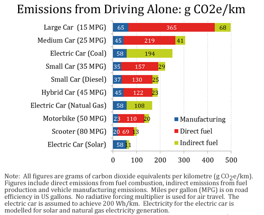

Is there a difference between climate change and global warming?
Global warming refers to the long-term warming of the planet over the last several decades. However,
climate change includes global warming. It also refers to other violently changing elements
Is the sun causing global warming?
The sun does not cause global warming. A series of satellite reports that have measured the energy output from
the sun since 1978 have shown a decrease in energy output from the sun over that period.
Can we still prevent climate change?
Yes! We can still prevent climate change, but it will take cooperation from all countries and governments. We will
have to introduce radical policies to address these problems. If we can't change policies, then
some experts fear the damage will become irreversible in just two years. Climate scientists believe that
if we can reduce climate change by 2020, then we will avoid the risk of irreversible climate change.
Do scientists agree on climate change?
Yes, the vast majority of scientists agree that climate change is occurring. In fact, the percentage is 97% and rising.
What is the greenhouse effect?
The greenhouse effect occurs when greenhouse gases gather in Earth's atmosphere and stay there for a prolonged
amount of time. Greenhouse gases include carbon dioxide, methane, nitruous oxide, water vapor
(which is not harmful), and ozone. Greenhouse gases prevent heat from leaving the Earth's atmosphere.
What is the most harmful greenhouse gas?
There is a lot of disagreement regarding the most dangerous greenhouse gas. Because CO2 remains
in the atmosphere for a century and because of its concentration, CO2
is the most destructive greenhouse gas. Make no mistake, decreasing your footprint of any harmful gases
is helpful to the environment.
Why do some areas experience cooling instead of warming?
Climate change includes all natural disasters that happen as a result of global warming. So, while some areas experience annual
cooling because of snowstorms, rainstorms, and hailstorms, the annual
temperature value around the world continues to rise.
Are humans causing global warming?
Yes. Scientists have concluded that global warming is caused by burning coal, oil, and gas, and by agricultrue. These are all manmade activities that we control.
Don't volcanoes emit more carbon dioxide than humans?
Volcanoes emit 645 million tons of CO2 per year, while humans emit around 29 billion tons of
CO2 per year. Volcanoes, therefore, emit only .02% of all carbon dioxide emmisions.
Human pollution causes the remainder.
Is global warming actually harmful?
Yes, global warming is harmful because it causes extreme weather changes and natural disasters.
Global warming causes rising sea levels (which will cause islands and entire states to become submerged
in water by the year 2100), ocean acidification (so that the oceans may no longer be able to sustain life forms by the year 2100, and
humans would be advised to not go into the water), wildfires, hurricanes, and even more sporadic natural disasters. So yes, global
warming is, in fact, harmful to us.
Can we reverse global warming?
Yes, but if we wait too long the effects of global warming will become permanent. In order for us to reverse our current climate
situation, we need to meet our carbon reduction goals, and lower our output of CO2 per year.
Are there any economic policies that help limit carbon emissions?
Yes, there are two options to lower emissions. The first is the carbon tax, which imposes a fee on the production and
distribution of carbon and sets a price for producing dirty oils. The carbon tax encourages companies to use clean energy and
to invest in energy efficiency. The second option for lowering emissions is cap and trade. In cap and trade, the government sets a cap on emissions.
Allowances are allocated to different businesses, with the unallocated portion
auctioned off to the highest bidder. Companies that use more than their allocated carbon share are taxed. They may decide not to use some of
their carbon allowance and instead sell it to other companies.
Do I have to be vegan?
While being vegan would decrease your carbon footprint, that is not the only answer to this very complex problem.
The main two foods to eliminate to reduce carbon would be red meat and dairy.
How do I transition to a plant based diet?
Start slowly. Don't get overwhelmed by cravings. If you usually eat red meat everyday, try
only eating it for four days out of the seven. When you adjust, reduce it to two days a week, and then try to stop
eating it entirely. Do the same thing with dairy if you're up for it, but make sure it's a gradual change so that you don't succumb to cravings.
How do I get my protein?
People with a plant based diet may get their protein several ways. Nuts, beans, legumes, quinoa, soy products
and hummus will provide protein. And, if you don't like any of these food options, then there are a number of different protein powders, drinks, and bars that
are dairy free.
How can I make my home more energy efficient?
What lightbulbs are energy efficient?
Compact fluorescent bulbs or LEDs. Change to these new technologies from current incandescent bulbs.
What is the Paris Agreement?
The Paris Agreement is a treaty that commits signatory countries to limit global warming to less than 2° celsius.
How many countries are in the Paris Agreement?
One hundred fifty-three countries are in the Agreement. The U.S. has announced its intention to withdraw from the Agreement.
Back to topWhat cars are eco-friendly? The following list ranks cars in order from most to least efficient.
|
 |